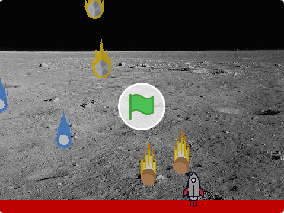
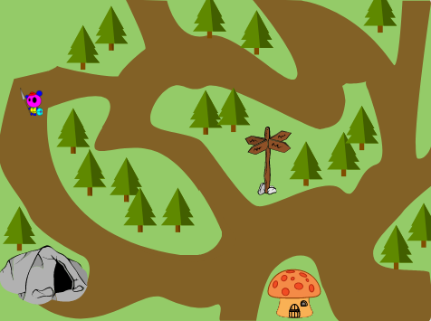
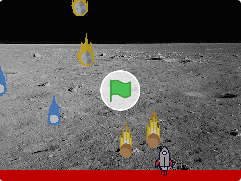
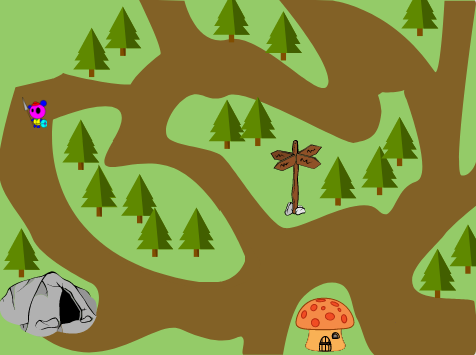

Prossimo Incontro
SOSPENSIONE DELLE ATTIVITÀ
A partire dal febbraio 2020 il CoderDojo Imperia ha sospeso le proprie attività a causa della diffusione della pandemia da Covid-19. Se le condizioni generali e le normative lo permetteranno, speriamo di poter riprendere le gli incontri a partire dal prossimo autunno.
Iscrivetevi al Canale Telegram del CoderDojo Imperia per restare aggiornati

La "Palestra" del Coding
CoderDojo è un movimento aperto e libero organizzato in centinaia di Club indipendenti sparsi in tutto il mondo con lo scopo di offrire a bambini e bambine in età scolare l’opportunità di imparare gratuitamente le basi della programmazione in un ambiente sicuro, divertente e socialmente stimolante.
Al CoderDojo non ci sono lezioni frontali, ma si offre ai ragazzi un contesto di apprendimento de-strutturato in cui vengono incoraggiati a collaborare tra loro.

Coder... Dojo?
l termine CoderDojo deriva dall’unione delle parole Coder, cioè programmatore, e Dojo, la palestra giapponese in cui si praticano le arti marziali. I giovani frequentatori dei CoderDojo prendono il nome di Ninja, e i volontari che li affiancano vengono chiamati Mentor.
I Mentor non insegnano, ma condividono una passione, non fanno le cose al posto dei ragazzi, ma gli suggeriscono la strada da percorrere, affiancandoli e invitandoli a pensare e a collaborare, restando comunque sempre a loro disposizione in caso di difficoltà

Imparare a programmare...
L’obiettivo di CoderDojo non è trasformare tutti i Ninja in futuri programmatori, ma educarli al pensiero computazionale, cioè la capacità di risolvere problemi complessi scomponendoli in problemi più semplici (tecniche di problem solving), applicando la logica e ragionando passo passo sulla strategia migliore per arrivare alla soluzione.
... e farlo insieme!
I giovani Ninja, con diversi livelli di abilità, sono incoraggiati ad aiutarsi a vicenda (peer mentoring) e a collaborare. Questo approccio non competitivo, oltre a favorire lo sviluppo di fondamentali competenze relazionali, può essere più coinvolgente rispetto a un rigido percorso di apprendimento.
Cosa si fa al CoderDojo?
A seconda dell’età e del livello raggiunto, ai giovani Ninja vengono proposte attività in grado di stimolare la loro curiosità e metterli alla prova.
Il primo livello è rappresentato dal percorso di creazione di videostorie e piccoli videogiochi con l’applicativo Scratch, che gli consente di apprendere i concetti base divertendosi.
Al raggiungimento di una buona padronanza di Scratch, offriamo la possibilità di proseguire il percorso orientato ad apprendere le basi del linguaggio di programmazione Python, di HTML e CSS per la creazione di pagine web, o MIT App Inventor per progettare applicazioni per smartphone!


Attività “unplugged”
Per i Ninja più giovani organizziamo attività “unplugged” (senza l’uso del PC) propedeutiche alla programmazione che stimolano in loro le capacità di ragionamento e li indirizzano ad utilizzare la logica per la soluzione di problemi al fine di prepararli alle attività svolte con il computer.

Gioca in trasferta!
I Ninja più appassionati del CoderDojo Imperia potranno decidere di partecipare a competizioni su scala regionale e nazionale per provare la loro abilità con Scratch confrontandosi con amici provenienti da altre zone del Paese o anche dall’estero!
Visita la nostra Classroom di Scratch!
 





Attività per gli accompagnatori
Mentre i giovani e le giovani Ninja lavorano, gli accompagnatori possono scegliere se prendere parte a brevi incontri informativi sui temi dell'educazione e delle tecnologie che cerchiamo di organizzare regolarmente.
In alternativa è possibile rilassarsi leggendo un libro nella nostra area lettura
COME PARTECIPARE
Chi e come?
Le attività sono adatte a bambini e bambine della Scuola Primaria (a partire dai 7 anni) e Scuola Secondaria.
Per partecipare è necessario:
- prenotare online su Eventbrite (da ripetere per ogni incontro)
- portare un PC portatile con mouse esterno e alimentatore (i tablet non sono adatti)
- un accompagnatore maggiorenne deve essere presente per tutta la durata dell’evento
I posti sono limitati: sarebbe bellissimo poter accogliere tutti, ma per ovvie ragioni organizzative e per il rispetto delle normative di prevenzione i posti sono limitati.
Sono valide esclusivamente le prenotazioni compilate e confermate sulla piattaforma Eventbrite. Per prenotarsi è necessario cliccare sul pulsante “Registrati” nella pagina dell’evento e compilare tutti i campi del modulo di iscrizione.
Dopo la conferma riceverete via email il vostro biglietto che non è necessario stampare.
Se i posti sono esauriti potete aggiungervi alla lista di attesa e sarete immediatamente contattati se si dovessero liberare dei posti.
Dove e quando?
Gli incontri si svolgono con cadenza mensile, di solito il sabato mattina, con una durata di circa due ore, presso ARCI Campo delle Fragole, viale Matteotti 31 ad Imperia.
Consulta i dettagli del prossimo incontro su Eventbrite per eventuali variazioni!
Le date degli incontri vengono comunicate circa 15 giorni prima e le prenotazioni si aprono circa 7 giorni prima dell’evento. Tutte le comunicazioni vengono effettuate tramite il nostro canale Telegram
Le regole del CoderDojo
- Be Cool! (siate amichevoli!)
- Chiedi a 3, poi chiedi a me!
- Non è una gara di bravura o di tempo
- Si può copiare!
Vorresti dare una mano?
Il CoderDojo Imperia è sempre alla ricerca di nuovi Mentor o anche solo di collaboratori per organizzare gli eventi.
Se hai voglia di dare il tuo contributo ed aiutare il movimento internazionale dei CoderDojo, parliamone!